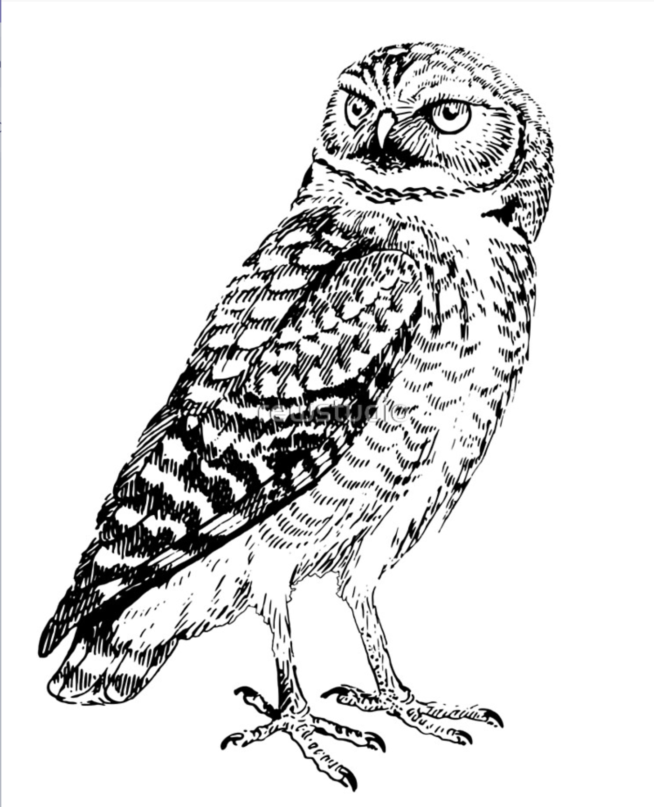

Introducción a la Ecología de Poblaciones

Bienvenidos
Muchas cosas han cambiado desde que escribí este libro en 1996. Las amenazas antrópicas a nuestras especies, bosques y clima, aunque ya presentes, no tenían la misma intensidad y protagonismo que tienen ahora. A la fecha hemos rebasado cinco de los nueve límites planetarios –físicos, biogeoquímicos y biológicos– que aseguran la persistencia a largo plaza de la vida en nuestra pequeña esfera azul. La ciencia de la ecología de las poblaciones no ha cambiado de manera substancial, y los conceptos en este libro siguen siendo fundamentales para entender, manejar, y conservar las especies que nos rodean. Pero ahora hay muchos más en juego: la sobrevivencia de nuestra especie depende de la persistencia de estps sistemas naturales.
Esta es una re-edición del libro de texto Introducción a la Ecología de Poblaciones que desarrollé en 1996-1997 como Profesor Asociado en el Departamento de Biología de la Pontificia Universidad Javeriana en Bogotá, Colombia. A pesar de varios intentos por mi parte, el libro nunca fue publicado formalmente, pero si utilizado como fotocopias de fotocopias de fotocopias del original por profesores y estudiantes en cursos de ecología en Colombia y en otros países. Dos de ellos, Orlando Acevedo-Charry y Andrea Morales me expresaron la importancia que el libro ha tenido en la formación de una nueva generación de biólogos en Colombia y Latino América.
Es por esto que he decidido re-encauchar el libro para una nueva generación de biólogos y ecológos que están enfocando sus carreras de manera más aplicada en conservación. He actualizado muchos de los ejemplos y he creado nuevas maneras de interactuar con los modelos y los datos. Tambien incluyo en esta nueva versión mucho del código en R que utilize para ilustrar muchos de los conceptos e ideas de la ecología de poblaciones
Todo el código utilizado para crear el libro incluyendo el texto, gráficas, y unidades interactivas se encuentra disponible en Github en este repositorio, tambien accessible al hacer click en en el símbolo de Github en la parte superior izquierda de la pantalla.
Licencia de uso
El libro es de uso gratuito bajo la licencia de Creative Commons de Atribución No-comercial Internacional 4.0. Si quieres contribuir a la mejora del libro reportando errores o sugiriendo cambios, por favor solicita un “Pull Request” PR aqui.
Cita sugerida: Ahumada, J.A. 2023. Introducción a la Ecología de Poblaciones. (https://futuro.link).